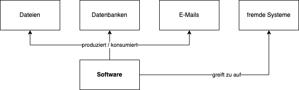

2 Software
In diesem Kapitel soll sich alles um Anwendungen drehen.
2.1 Software-Auswahl
Die Auswahl der “richtigen” Software ist schwierig: Der Markt ist schier endlos groß, regelmäßig kommt neue Software auf den Markt; und hin und wieder verschwindet auch Software wieder.
Jede Software löst ein gewisses Problem für eine Zielgruppe (hoffentlich :) ).
Wir beschreiben hier Kriterien, die bei Softwareauswahl in Hinblick auf Nachhaltigkeit helfen können. Ziel ist hier die Reduktion des sogenannten Vendor Lock-In, um zu ermöglichen, auch zu einem späteren Zeitpunkt die Software zu wechseln.
2.1.1 Der besondere Wert von Daten
Viele Diskussionen drehen sich um die Auswahl bestimmter Software, kontrastiert Programme gegeneinander, usw. Wir empfehlen einen anderen Blick: Den Fokus auf die von der Software verarbeiteten Daten, wie bspw:
Dateien (Textdateien, Office-Dateien, Bild-Dateien)
Datenbanken (Open Source oder Proprietär)
E-Mails (empfangen oder senden)
Kommunikation mit fremden Systemen über Schnittstellen

Als Erstes sollte für jede Software identifiziert werden, welche Daten diese verarbeitet oder ggf. erstellt. Für all diese Daten kann man sich folgende Fragen stellen:
2.1.2 Sind Offene Standards als Datenformate möglich?
Wenn es für das zu lösende Problem offene Standards gibt, welche das Problem umfänglich lösen, ist dies ein sehr guter Startpunkt. Dann kann man - ausgehend von dem offenen Standard - weiter nach Softwarelösungen, welche diesen Standard implementieren, suchen.
Offene Standards sind lizenzkostenfrei nutz- .und implementierbar, und “gehören” nicht einer einzelnen Firma, sondern in der Regel einem (mehr oder weniger formellen) Gremium aus mehreren Akteuren.
| Problemstellung | Offener Standard | Proprietärer Standard |
|---|---|---|
| Office-Dokumente | ODF - OASIS Open Document Format for Office Applications | Word-Dateien (.doc, .docx) von Microsoft |
| E-Mail-Abruf, Kontakte, gemeinsame Kalender (PIM-Suite) | IMAP + Caldav + Carddav | Exchange / ActiveSync von Microsoft |
| gemeinsamer Chat | Matrix-Protokoll | bspw. Slack, Microsoft Teams |
Wenn man einen offenen Standard identifiziert hat, kann man von diesem ausgehend nach Software suchen, die ihn implementiert. Hier sind die weiteren Kriterien relevant (Open Source etc).
Für viele Problemstellungen wird man noch keinen ubiquitären Standard finden. Daher sind weitere Kriterien relevant.
2.1.3 Besitzt die Software eine standardisierte Schnittstelle?
Falls es keinen etablierten Standard für das gewünschte Datenformat gibt, ist es hilfreich zu schauen, ob die Software eine Schnittstelle besitzt, über die alle Funktionen der Software abrufbar sind. Dies kann bspw. sein:
eine API (maschinenlesbare Schnittstelle) im OpenAPI oder GraphQL Format; oder aber ausführliche und vollständige Dokumentation der API
Verwendung einer Open Source Datenbank zur Datenspeicherung: In diesem Falle kann man jederzeit auf die Rohdaten der Software zugreifen - gewissermaßen “an der Software vorbei”. Wir empfehlen hier uneingeschränkt nur reine Open Source Datenbanken wie SQLite, Postgres, MariaDB oder MySQL; da für kommerzielle Datenbanken häufig die Lizenzierung einen direkten Datenzugriff verbietet, oder aber eine sehr teure Lizenz nachgekauft werden muss.
Verwendung von Open Source mit Erweiterungsmöglichkeiten. In diesem Fall kann in den Quellcode der Software direkt geschaut werden, und dieser entsprechend um Import/Exportfunktionen erweitert werden.
Ziel ist es, zu vermeiden, dass ein “Datensilo” entsteht, aus dem die Daten nicht mehr gewinnbringend und nachhaltig in der Organisation nutzbar sind.
2.1.4 Nutzung von Open Source Software
Open Source Software ist Software unter einer OSI-kompatiblen Lizenz wie bspw. MIT oder GPL-Lizenz. Es gibt darüber hinaus auch Lizenzen, welche nach der strikten Definition nicht OSI-kompatibel sind, aber im Alltag für die meisten Szenarien trotzdem ähnlich verwendet werden können, wie bspw. die Business Source Lizenz.
Wir empfehlen uneingeschränkt die Nutzung von quelloffener Software, sofern diese existiert und die notwendigen Funktionen umfasst.
Bei Open Source Software, welche viele der Funktionen umfasst, aber einige Funktionen fehlen, empfehlen wir zu prüfen, ob ein Anbieter im Ökosystem der Software gefunden werden kann, der diese Funktionen im Open Source Kern der Software erweitert.
Open Source und Künstliche Intelligenz
TODO: write here about weights
- “Weights” der KI != Open Source (meistens)
2.1.5 SaaS
- Vendor Lock In
- Fokus auf Daten: SAAS produkt, welches nur quelloffene Daten generiert, kein großes Problem.
- Open Source Anbieter (=Hersteller von Open Source) haben auch häufig SAAS im Angebot
- Open Source und SAAS - bspw. Sentry -> kann funktionieren.
2.2 “Hard Facts” / Messbare Kriterien
2.2.1 Datentransfer
2.2.2 Energieverbrauch
- Energieverbrauch beim Trainieren von KI-Modellen
- Energieverbrauch beim Nutzen von KI-Modellen (chatgpt)